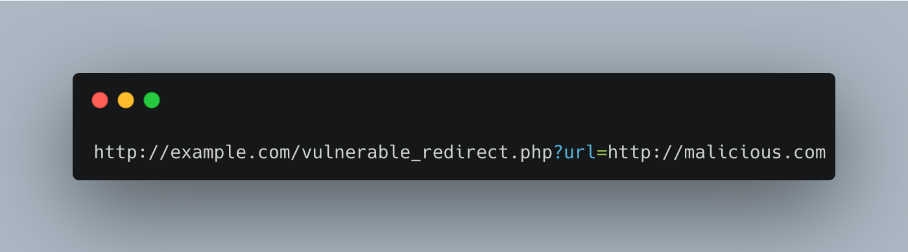
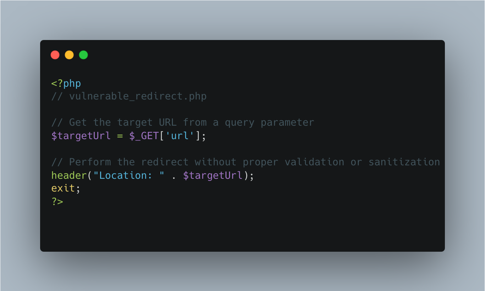
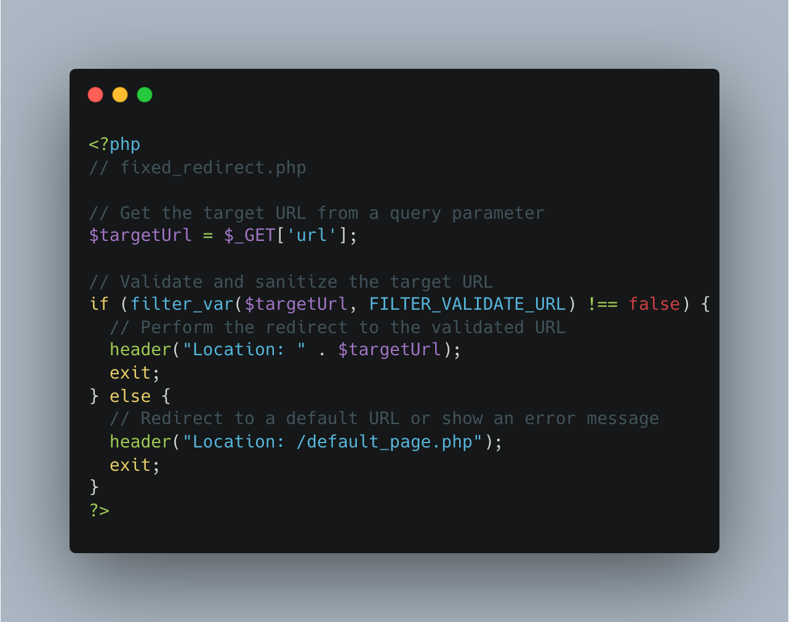
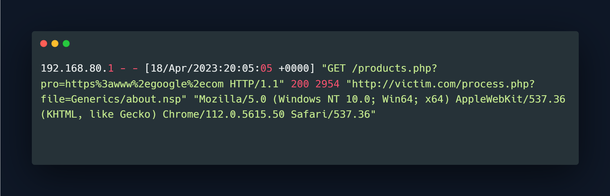
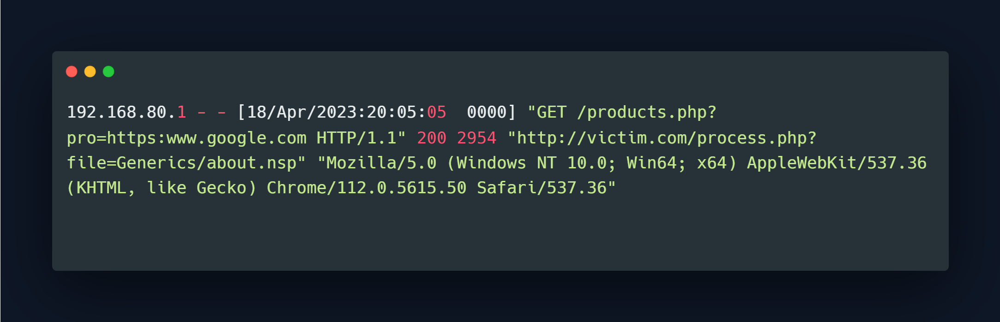

What is Open Redirection?
Open redirection is a web security vulnerability that occurs when a website or web application redirects users to a different URL without proper validation or sanitization of the target URL. Attackers can exploit Open Redirection to trick users into visiting malicious websites or performing actions unintended by the website owner.
In an open redirection attack, an attacker typically crafts a legitimate URL hosted on the vulnerable website, but includes a malicious URL as a parameter or query string. When a user clicks on the crafted URL, the website’s redirect mechanism automatically redirects the user to the malicious URL, which can lead to various malicious activities, such as Phishing attacks, spreading malware, or stealing sensitive information.
Open redirection vulnerabilities commonly occur when websites use user-supplied input, such as URLs, as part of their redirect mechanism without proper validation or sanitization. To prevent open redirection attacks, web developers should validate and sanitize all user-supplied input used in redirections, and ensure that only trusted and whitelisted URLs are allowed for redirection. Additionally, it’s important to implement proper authentication and authorization mechanisms to ensure that only authenticated and authorized users can perform redirects. Regular security testing, including vulnerability scanning and penetration testing, can also help identify and fix open redirection vulnerabilities in web applications.
Open Redirection Types / Possible Vectors
1. URL-based open redirection
This is the most common type of open redirection vulnerability. It occurs when a website takes a URL or a URL parameter as input and uses it in a redirect without proper validation or sanitization. An attacker can craft a malicious URL that includes a different domain or malicious URL as a parameter which will be included in the redirect, leading to an unintended redirection to a malicious website.
2. JavaScript-based open redirection
This type of open redirection vulnerability occurs when a website uses JavaScript to perform a redirect, but the target URL is obtained from untrusted or user-controlled sources without proper validation or sanitization. An attacker can manipulate the JavaScript code or input data to execute a malicious redirect to a different domain or URL.
3. Meta refresh-based open redirection
This type of open redirection vulnerability occurs when a website uses the HTML “meta refresh” tag to redirect users to another URL automatically, and the target URL is obtained from untrusted or user-controlled sources without proper validation or sanitization. An attacker can manipulate the meta refresh tag or input data to trigger a malicious redirect to a different domain or URL.
4. Header-based open redirection
This type of open redirection vulnerability occurs when a website uses HTTP headers, such as “Location” header, to perform a redirect, but the target URL is obtained from untrusted or user-controlled sources without proper validation or sanitization. An attacker can manipulate the header value or input data to trigger a malicious redirect to a different domain or URL.
5. Parameter-based open redirection
This type of open redirection vulnerability occurs when a website uses a parameter in the URL or in a form submission as part of the redirect process, but fails to properly validate or sanitize the parameter value. An attacker can manipulate the parameter value to trigger a redirect to a malicious URL.
It’s important for web developers to be aware of these different types of open redirection vulnerabilities and implement proper validation and sanitization of user-supplied input to prevent such vulnerabilities in their web applications.
How Open Redirection Works?
Here’s an example of a vulnerable code in a web application that demonstrates an open redirection vulnerability using PHP:
.png)
In this example, the web application takes a target URL as a query parameter (url) from the user and uses it in a redirect without validating or sanitizing the input. This can lead to an open redirection vulnerability, as an attacker can craft a malicious URL and pass it as the url parameter, leading to unintended redirection to a malicious website.
For example, an attacker could create a URL like this:

When a user clicks on this URL, the vulnerable application will automatically redirect the user to http://malicious.com, which could be a phishing website or a site hosting malware.
Impact of Open Redirection
Open redirection vulnerabilities can have a significant impact on the security of a web application and its users. Some of the potential impacts of open redirection vulnerabilities include:
1. Phishing attacks:
Attackers can craft malicious URLs that appear legitimate and trick users into clicking on them, leading to unintended redirection to a phishing website. Phishing attacks aim to steal sensitive information, such as usernames, passwords, and financial details, from unsuspecting users.
2. Malware distribution:
Attackers can redirect users to websites hosting malware, which can result in the automatic download and installation of malicious software on the user’s device. This can lead to malware infections, data breaches, and other types of cyber attacks.
3. Social engineering attacks:
Attackers can use open redirection vulnerabilities to conduct social engineering attacks, where they manipulate users into taking unintended actions, such as downloading malware, making fraudulent payments, or revealing sensitive information.
4. Reputation damage:
If a website is found to have open redirection vulnerabilities, it can result in reputational damage for the website owner or organization. Users may lose trust in the website’s security and reliability, leading to loss of business, brand damage, and financial repercussions.
5. Legal and regulatory consequences:
Open redirection vulnerabilities can result in legal and regulatory consequences, especially if sensitive user information is compromised. Organizations may face legal liabilities, fines, or other penalties for failing to protect user data and secure their web applications.
Prevention Methods
web developers should follow secure coding practices and implement proper input validation and sanitization techniques. Here are some preventive measures that can be taken:
Validate and sanitize input: Always validate and sanitize any user-supplied input that is used in the redirection process. This includes URL parameters, form submissions, and any other input that is used in generating redirect URLs. Validate that the input conforms to expected formats, such as valid URLs or whitelisted domains, and sanitize it to remove any malicious or unexpected characters.
Use a whitelist approach: Instead of trying to blacklist or filter out specific characters or patterns from user input, it’s generally safer to use a whitelist approach where only known and trusted values are allowed. Define a whitelist of trusted domains or URLs to which the application is allowed to redirect, and validate that the user-supplied input matches the whitelist.
Avoid using user-controlled data in redirects: Avoid using user-controlled data, such as input from URL parameters or form submissions, directly in the redirect process. If possible, use other means of redirection, such as using HTTP headers or server-side redirects that do not rely on user-controlled data.
Implement proper authorization and authentication: Ensure that only authorized users are allowed to trigger redirects. Implement proper authentication and authorization mechanisms to verify the legitimacy of the user and their actions.
Implement secure coding practices: Follow secure coding practices, such as using secure coding libraries or frameworks, keeping software up-to-date with the latest security patches, and conducting regular security reviews and vulnerability assessments.
Educate users about potential risks: Educate users about the potential risks of clicking on suspicious or unexpected URLs, and encourage them to be cautious when clicking on links from unknown sources or providing personal information on websites.
Stay informed about web security best practices: Stay updated with the latest web security best practices and guidelines, such as the OWASP Top Ten Project, and incorporate them into your development processes.
By implementing these preventive measures and following secure coding practices, web developers can significantly reduce the risk of open redirection vulnerabilities in their web applications and protect their users from potential attacks. Regular security testing, including penetration testing and vulnerability assessments, can also help identify and mitigate any potential vulnerabilities in the application.
Here’s an example of a vulnerable code in PHP that demonstrates an open redirection vulnerability, along with a fixed version:

Fixed Code:

In the fixed version, the **filter_var** function with **FILTER_VALIDATE_URL** filter is used to validate the user-supplied url parameter. This filter checks if the value is a valid URL according to the PHP filter extension, and if it returns true, the redirect is performed to the validated URL. If the url parameter does not pass the validation, a default URL or an error message can be shown, and no redirection is performed. This helps to prevent malicious URLs or invalid values from being used in the redirection process, mitigating the open redirection vulnerability.
Detecting Open Redirect Attacks
What was described in Part 1 was a list of things to do from the perspective of a hacker/attacker. At the same time, the issues that a developer should pay attention to while developing were also mentioned.
So in this part, let’s have a look at how to detect Open Redirection attacks with an example. But, before moving, let’s quickly recap some of the important things to detect Open Redirection attacks;
- If there is a consecutive requests to query string parameters such as ?next (http://website.com/param.php?next=), or ?url ( http://website.com/…?url=), with payloads like http://attacker.com or attacker.com (URL structure)
- For the WAF or other middleware products, sometimes payloads can have bypass techniques like;
- Localhost
- http://[::]:25/
- http://①②⑦.⓪.⓪.⓪
- CDIR
- Decimal Bypass
- Hexadecimal Bypass 2. http://0x7f000001/ = http://127.0.0.1
- Localhost
- Encoded characters like %2f = /
Of course it’s not possible to detect or analyze web server logs without using automated detection methods. For an easier way, any SOC analyst can use the following regex to detect open redirection attacks.
/^.”GET.?.=(https%3a%2f%2f[a-z0-9-]+%2e[a-z]{2,}).+?.HTTP/.“.$/gm
This regex will match any log entry where the HTTP method is GET, the request contains a query parameter with https://x.com, and the request is using HTTP version 1.0 or 1.1. This should match the most common open redirection attack patterns.
You can customize this regex to match specific query parameters or HTTP methods that are relevant to your web application. Remember that this regex is just one part of an overall security monitoring strategy and should be used in conjunction with other security tools and best practices.
Detection Example
Example nginx access log file;

As you can see it on the above screenshot, open redirection attacks were made to the http://victim.com website on 18/Apr/2023:20:05:05. We have mentioned that attention should be to encoded characters. Here is where the importance of this issue is seen.
Encoded:

Decoded:  When we decode the request, we see that the attacker wants to redirect to google.com with the ?pro parameter. When we realize that all requests occur within seconds, we understand that this is done with the help of a tool. At the same time, the source IPs are all the same.